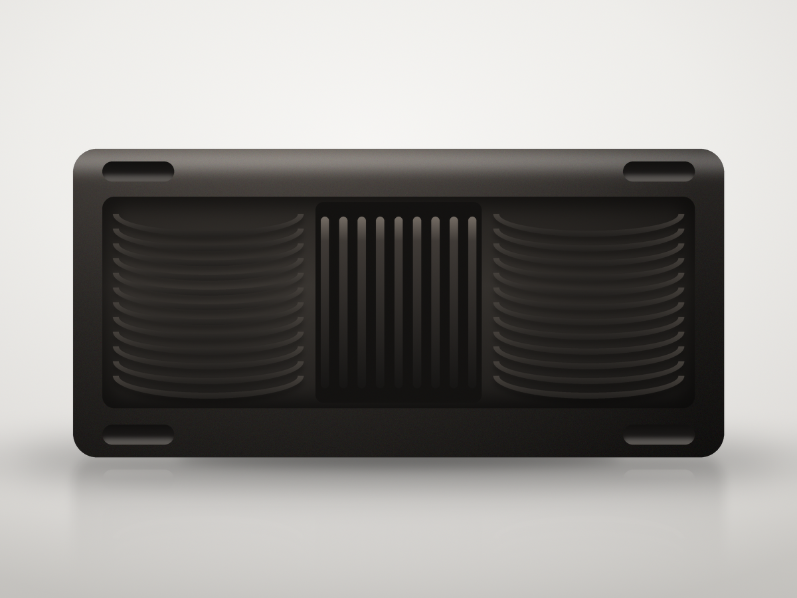

El molde, el colado y la terminación pasan por nuestras manos, no por un proveedor.
Producción 100% paraguaya
Hierro fundido y lapacho nativo, trabajados enteramente dentro del país.
Hecha para heredarse
Una sola pieza de hierro, sin nada que se descascare ni se afloje con los años.
La colección
Piezas hechas para quedarse
Cada una sale de su propio molde, se enfría despacio y se termina a
mano. Ninguna sale de la fundición sin que alguien la revise antes.

Parrilla, hornalla y horno
Grill rectangular
Una placa maciza con marco perimetral y asas integradas. Las
nervaduras curvas marcan la carne; la zona ranurada del centro
escurre la grasa y deja que se dore en vez de hervirse.
Perfil bajo y boca ancha, dos asas laterales integradas y una tapa
pesada que sella el vapor. El sostén es de lapacho: se trabaja
aparte, se lija fino y se monta al final.
El hierro no se apura. Junta el calor, lo reparte parejo y lo
devuelve despacio.
Calor parejo
Tarda en tomar temperatura y después no la suelta. Sella de verdad y no se cae cuando entra algo frío.
Una sola pieza
Nada que se descascare, nada que se afloje. El hierro fundido no tiene partes que puedan fallar.
De la hornalla a la brasa
Hornalla, horno, leña o brasa. La misma pieza empieza la cocción y la termina.
Mejor con los años
Cada cocción deja su capa de aceite. La superficie se vuelve oscura, lisa y antiadherente de verdad.
Hecho en Paraguay
De la fundición a tu cocina
El hierro se funde, se cuela en el molde y se enfría despacio.
Después viene la mano: se rebaja la rebaba, se alisa la superficie,
se revisa. Ninguna pieza sale sin pasar por ahí.
La producción es 100% paraguaya, de punta a punta. No importamos
piezas armadas ni mandamos a terminar afuera: el hierro se funde
acá y el lapacho del sostén es madera nativa, trabajada acá.
Cada pieza se funde, se termina y se revisa en Paraguay,
una por una.
Sostén de lapacho, montado a mano.
Cuidado y uso
Cómo se cuida
Agua caliente, un poco de aceite y secarla bien. No hay más secreto
que ese.
01
Curar
Lavala con agua tibia y una gota de detergente, y secala bien.
Pasale una capa finísima de aceite por dentro y por fuera. Al horno
a 200 °C, boca abajo, una hora. Dejala enfriar adentro. Dos o
tres vueltas y queda una base negra y pareja.
02
Limpiar
Mientras todavía está tibia: agua caliente y cepillo. Si quedó algo
pegado, la sal gruesa hace de abrasivo. Nada de lavavajillas,
remojo largo ni detergentes fuertes.
03
Secar
Secala enseguida con un repasador y, si querés quedarte tranquilo,
ponela dos minutos a fuego bajo hasta que no quede humedad. El
hierro y el agua parada no se llevan.
04
Aceitar
Con la pieza tibia, pasale una gota de aceite con papel de cocina
hasta que quede apenas satinada, nunca pegajosa. Guardala
destapada, o con un papel entre la tapa y el cuerpo.
El sostén de lapacho
La madera no va al agua ni al lavavajillas: un trapo apenas húmedo
alcanza. Cada tantos meses, una pasada de aceite mineral de grado
alimenticio o cera de abeja. En el horno, no más de 180 °C;
por encima de eso, cociná sin la tapa o desmontá el sostén.
Si aparece óxido
No pasa nada. Frotá con esponja de acero o un poco de vinagre
rebajado, enjuagá, secá y volvé a curar la pieza. El hierro fundido
casi siempre vuelve.
Contacto
Escribinos
Contanos qué pieza te interesa y te respondemos por WhatsApp.